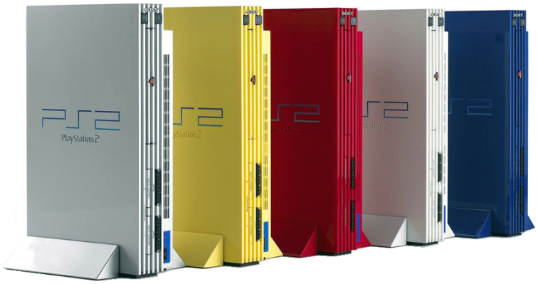

Evolution of Console

세가_ 드림캐스트
_ 1998
세가가 처음 가정용 게임기 시장에 뛰어들면서 외쳤던 '오락실 게임을
집에서'라는 외침에 가장 가까웠던 기기
세가의 아케이드 기판인 NAOMI를 가정용에 맞게 사양을 약간 낮추어
만들어냈다. 출시된 다른 6세대 게임기들보다 성능이 높은 편이다.
플레이스테이션 2
_ 2000
소니가 내놓은 2번째 가정용 게임기의 전설은 레전드급 콘솔
성능은 세가의 드림캐스트와 비교해선 밀리는 편이었지만 전작인
플레이스테이션의 장점이었던 가격 경쟁력, 압도적인 서드파티 보유,
출시전 드림캐스트를 까내리는 마케팅 등으로 출시 후 얼마되지 않아 6세대
게임기 시장을 정복하게 됩니다.
닌텐도_ 게임큐브
_ 2001
닌텐도가 닌텐도 64로 잃어버린 자존심을 되찾기 위해 야심차게 내놓은
후속작이다.
출시 시기가 PS2가 나온 이후였다는 점과 마케팅의 부족, 많은
서드파티들이 소니 진영으로 넘어간 것 등 많은 요소가 닌텐도에게 등을
돌려 망하게 되었다.
마이크로소프트_ XBOX
_ 2001
마이크로소프트 최초의 가정용 게임기, 일본에선 큰 성공을 거두지
못했지만 북미에선 아타리 이후 시장을 꽉 잡고 있던 일본 게임기들
사이에서 북미도 할 수 있다는 걸 보여준 게임기
출시 시기가 PS2가 나온 이후였다는 점과 마케팅의 부족, 많은
서드파티들이 소니 진영으로 넘어간 것 등 많은 요소가 닌텐도에게 등을
돌려 망하게 되었다.